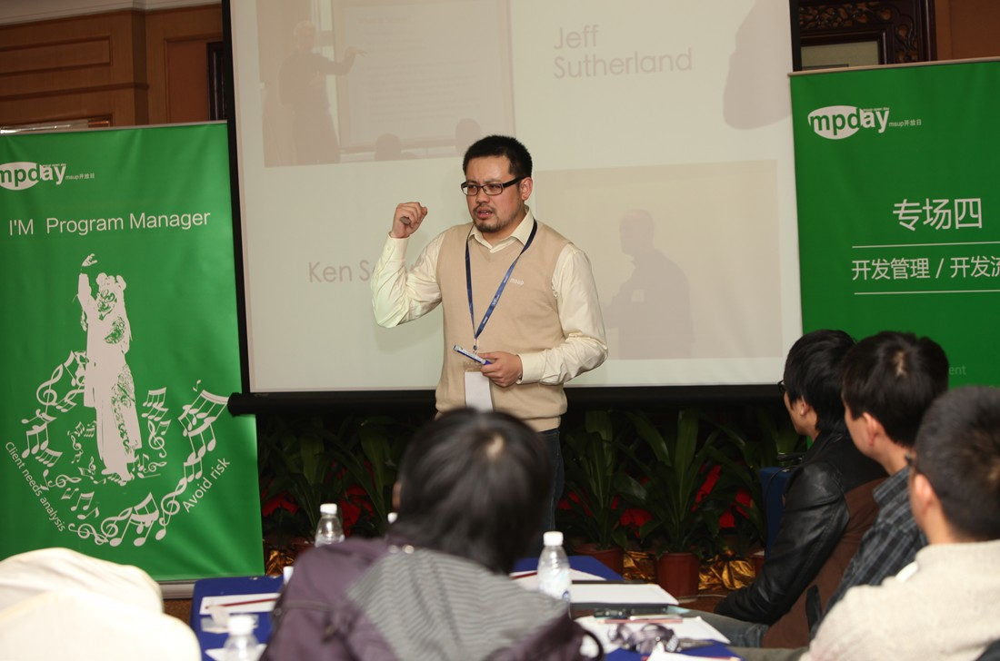

关于姜志辉

小程序员：自由职业者。线下交流组织“设计匠艺”核心小组成员。曾拿过IBM两个无关痛痒的奖项。于05、09年先后在863国家数字油田的项目中被“架构师”。一直奋斗在第一线，从05年开始以“Coach”的角色在国内外多个团队中推广和分享敏捷技术，帮助他们改进团队。业余喜欢组织线下技术活动的各种交流和分享，偶尔在一些开发者大会上丢人现眼(多用名姜伟)，作为一名快乐的实用主义程序员。虽然热衷于实用主义和敏捷开发技术。但是能真正吸引他的是程序与使用者交流和沟通的能力。他是实用开发的“永久消费者”，几乎在任何地方，都可以找到软件开发哲学的灵感。
当不沉浸在编程之乐时，他喜欢在线下交流活动中充当一名组织者。在那里，人们叫他--大胡子。关于他的敏捷思想，请参见如何构建敏捷开发机制。最近两年以来，除了编程匠艺更加娴熟之外，敏捷思想层的认识基本上没有什么太大的长进。
当不沉浸在编程之乐时，他喜欢在线下交流活动中充当一名组织者，在那里，人们叫他 -- 大胡子！